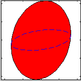
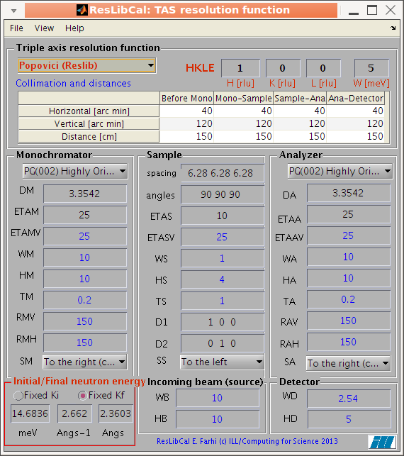

ResLibCal: a tool to compute
triple-axis neutron spectrometer resolution

E. Farhi, ILL/DS/CS - Version 1.3 - $Date$
- Purpose
- Obtaining the package
- Installation - starting
- Available computational methods
- Usage to compute the TAS resolution
function (with plots)
- ResLibCal: the main interface
- ResCal standard nomenclature for
configurations
- The lattice and spectrometer
coordinate frames
- Plotting the TAS resolution
function
- Handling computation along a
scan (measurement sequences)
- Loading previous configurations
- Exporting the results, saving
the configuration
- Non interactive mode (compute
only)
- Convolution of the TAS resolution
function with a model, in 4D
- Dispersion model: 4D dynamic
structure factors S(q,w)
- Planned in the future
- Help
- Credits and disclaimer
Purpose
This ResLibCal application gathers a set of analytical computation
methods to estimate the resolution function of a triple-axis neutron
spectrometer (TAS). ResLibCal is based on Matlab. The Cooper-Nathans
and Popovici methods are proposed [1-7],
in different implementations from:
- ResLib
(A. Zheludev)
- ResCal5 (A. Tennant
and D. Mc Morrow)
- Res3ax (J. Ollivier)
- ResCal from
(Hargreave,Hullah,1979), ported into vTAS_view
(Y.Raoul/A. Bouvet/A. Filhol) [Fortran
code]
- McStas (K. Nielsen,
K. Lefmann, E. Farhi, P. Willendrup et al.) using the templateTAS (E. Farhi)
instrument
Obtaining the
package
Source code
The package can be obtained here
[ZIP 220 ko]. You can also browse the source code here
or get a copy.
It does not depend on any other toolbox/library, except Matlab.
Simply extract the application archive.
In addition, the legacy RESCAL code is also made available as [Fortran code].
Binary pre-compiled (no need for Matlab)
It comes pre-installed in the iFit standalone
distribution.
ResLibCal does not require iFit to be installed, and can be used as
a separate application. However, to benefit from the 4D convolution
feature, it is advised to install iFit, which includes ResLibCal.
Installation -
starting
Just launch ResLibCal with:
>> ResLibCal;
If you use the source code distribution (requires a Matlab license),
type:
>> addpath(genpath('/path/to/ResLibCal'))
If you use the standalone
(binary compiled, no need for a Matlab license) application, launch
the application from iFit
by starting:
from the terminal:
% ifit ResLibCal
from iFit standalone:
>> ResLibCal
Available
computational methods
There are basically two analytical methods to compute the resolution
function of a TAS instrument:
The Cooper-Nathans [1]
method handles a conventional description of the instrument, with
collimations and homogeneous mosaic spread.
The Popovici method [3]
handles similarly collimations and mosaic spreads (but here with
separate horizontal and vertical components), but also much more
geometrical details, including the optical elements size, and the
radius of curvature of the monochromator and analyzer. Modern TAS
machines mostly use optics focusing so that this method is
probably more suited to model today's spectrometers.
The Full Monte-Carlo uses a Monte-Carlo instrument simulation with McStas (templateTAS instrument) to evaluate the resolution as a cloud of points in the reciprocal space. This cloud can then be used for 4D convolution.
The analytical methods, Cooper-Nathans and Popovici, define the resolution matrix as [3]:
M = [B.A. [C'.F.C+G]-1 A'.B']-1
where:
- the G matrix contains the horizontal and vertical collimation (alpha and beta parameters)
- the F matrix contains the monochromator and analyser mosaicity (vertical and horizontal)
- the A matrix holds the ki3 cotan(θM) and kf3 cotan(θA) resolution volume terms (apparent monochromator and analyzer beam cross sections)
- the B matrix represents the orientation of the sample (angle A3), i.e. the momentum exchange Q in the ki frame
- the C matrix is roughly 1/2, with monochromator and analyzer projection terms.
The term C'.F.C is often labeled as H, and has a slightly more developed expression in the Popovici formalism, with additional geometrical terms involving distances and dimensions of the spectrometer parts.
The intensity pre-factor R0 can be estimated as (in Cooper-Nathans formalism) [3]:
R0 = [RM RA (2π)4 det(F) ] / [ 64π2 sin(θM) sin(θA) det(H) ]
where RM and RA are the monochromator and analyzer reflectivity. A similar expression holds for Popovici.
From there, the resolution Gaussian distribution is obtained from
R(q,w) = R0 e -x'.M.x
where x = [qx qy qz w] is the offset to the center of the resolution, in the HKLE 4D space.
The following computational methods are available (top left red pop-up menu):
- Cooper-Nathans/AFILL: the original Cooper-Nathans [1] code RESCAL from Brookhaven
'AFILL'. Mosaicities are isotropic (horizontal equals vertical).
[Fortran code].
- Cooper-Nathans/ResCal5: a simple re-write of the
Cooper-Nathans method [1] from the
ResCal5
Matlab application. Mosaicities are isotropic (horizontal equals
vertical).
- Cooper-Nathans/Res3: simple Cooper-Nathans based on
notes from B. Hennion in the Popovici formalism [3], with correction [7].
- Cooper-Nathans/ResLib: an enhanced version of the
Cooper-Nathans method [3] from the
ResLib
Matlab application, in the Popovici formalism [3]. The analyzer reflectivity is
taken into account (with analyzer thickness 'WA'). Supports
vertical and horizontal mosaic spreads, with correction
[7].
- Popovici/ResLib: the Popovici formulation of the
resolution [3]. The analyzer
reflectivity is also taken into account (with analyzer thickness
'WA') and correction [7].
- Popovici/ResCal5: the Popovici formulation of the
resolution [3], with vertical
sample mosaicity , but homogeneous mosaicity for
monochromator and analyzer [7].
- Full Monte-Carlo (McStas): the instrument is modeled as a source, a monochromator, a sample, an analyzer and a detector. The simulation is assembled using McStas [8] and compiled locally from a C source. This is the most accurate description of the instrument.
Tip: If you do not know which method to use, prefer any of the Popovici methods. The Cooper-Nathans method is not recommended (highly approximate). The most accurate method is the full Monte-Carlo, but it is slower.
Intensity:
The Cooper-Nathans/AFILL method uses the Chesser and Axe
intensity estimate [2], whereas all
the other methods use the Popovici formulation [3]. The intensity estimate is
given w.r.t the source, and is given in [a.u.]. The monochromator
and analyzer reflectivity is assumed to be ideal (1).
The intensity with the Full Monte-Carlo model provides the best estimate.
Collimation:
In all methods, the alpha/beta collimation parameters
support guide m-coating specification (negative values
e.g. -2) which are then converted to equivalent critical angles 0.1
m λi [deg]. The alpha/beta collimations are
also limited by the effective divergence set from the geometry,
e.g. atan(width or height/distance) [rad].
The collimations with the Full Monte-Carlo model provides the best estimate, as they are indeed modeled as Soller type collimators.
Mosaic spread:
The sample mosaic spread is also taken into account, as
well as a correction for the sample orientation w.r.t. the
incoming beam.
In the legacy Cooper-Nathans formalism, all mosaic spreads are
isotropic (monochromator, analyzer, sample). In the
Cooper-Nathans/Popovici formalism, mosaicity supports separate
vertical and horizontal components, including correction [7].
In the Popovici formalism, all mosaicities are taken into account
with separate vertical and horizontal components (monochromator,
analyzer, sample).
The mosaicities with the Full Monte-Carlo model are assumed with a gaussian reflectivity profile.
Computation takes a few 10ms, whatever be the analytical method
used.The Full Monte-Carlo takes a few 100 ms.
Usage to compute
the TAS resolution function (with plots)
The normal use of the application is through its GUI, which is a
single window.
- The File menu allows
to import a saved configuration, export the main window image,
print it, reset to the default/saved configuration, and quit.
- The View menu allows
to select the representation of the resolution matrix, as 2D or
3D view, select if you wish to compute it in the lattice frame
(rlu), show the vertical Qz component or the energy, or in the
instrument frame (Q axis), force a re-computation manually, or
allow an automatic re-computation of the resolution when any
change is made in the GUI.
- The Help menu mainly
bring you here.
It is also possible to use the application from a Matlab script or
prompt, without starting the GUI (see below).
The computation of the resolution is carried-out in about 11 ms, but
the display can be slightly longer when using the GUI (few 100 ms).
ResLibCal: the
main interface
The main interface present all parameters required to configure a
Cooper-Nathans or Popovici computation. All items have a
contextual help (bring the mouse pointer over to display a short
tool-tip, with signification and units). Parameters indicated in blue are used only in
for the Popovici method. Parameters in red are those which the user should
mostly change (incident energy, position of measurement HKLE) once
the instrument configuration has been set.
The Q and Energy transfer are defined as:
Q = HKL = Ki - Kf
w = E = Ei - Ef
where Ki,Kf and Ei,Ef are the wavevectors
[e.g. in rlu or Angs-1] and energies [e.g. in meV] in
initial (incoming) and final (after sample) states.
The main parameter categories are:
- The method to use (Popovici is usually a good choice as a start)
- The HKLE position,
which can be vectors
for computations along a scan/set of positions
- The collimators and distances in a table
- The monochromator configuration
- The sample configuration
- The analyzer configuration
- The incident beam and detector sizes
- The neutron energy
setting
When any value is changed, an automatic re-computation is
performed if the View/Auto-update
menu item is checked (which is the default).
The result of the computation can be displayed from the View
menu in 2D and 3D, as well as the instrument geometry.
The resolution matrix is then shown in reciprocal lattice units (rlu) [a*,b*,E] or
inverse Angstroem (Angs-1) [Qx,Qy,E or A,B,E] . You can
select the coordinate frame used for displaying the resolution in
the Un-checking the Resolution in ... sub-menu in the View menu. See below for a description of the
available coordinate frames. It is also possible to plot the
resolution function projections in the vertical [Qz, c* or
C] axis instead of the energy E axis by toggling the View
menu, e.g. Resolution in [Qx,Qy,E] item.
The resolution matrix is always computed in [Angs-3.meV],
but it can be shown in [rlu3.meV] in the 2D and 3D
views.

The ResLibCal main interface.
All items have contextual help. When the View/Auto-update
menu item is checked, any change in
the interface triggers a re-computation of the resolution, and
an update of opened plots.
The collimations are given in [arcmin i.e. 1/60 degree], but are bound between 0 and the geometrical angular aperture defined by the distances and dimensions of the spectrometer parts. The source-monochromator collimations (ALF1 and BET1) can be defined as a wavelength dependent divergence when given a negative value '-m' for a guide m-coating reading:
0.1
m λi [deg] where
λi is the incident wavelength.
The monochromator and analyser curvatures can be given as the curvature radius [in cm], or set to 0 for a flat geometry, or to a negative value (e.g. -1) to request an automatic computation using the following expressions (for both monochromator and analyser):
RV = 2*L*sin(θ)
RH = 2*L/sin(θ)
where
θ is the tilt angle, and 1/L=1/L
before + 1/L
after is the effective focal distance.
ResCal
standard nomenclature for configurations
The user interface and configuration files lists parameters with
the legacy
ResCal
naming. The meaning of the configuration parameters is the
following
DM Monochromator d-spacing
DA Analyzer d-spacing
ETAM Monochromator mosaic
ETAA Analyzer mosaic
ETAS Sample mosaic
SM scattering sense frocdm monochromator +1=right, -1=left
SS scattering sense from sample +1=right, -1=left
SA scattering sense from analyzer +1=right, -1=left
KFIX fixed neutron wavevector in Ang.-1
FX index for fixed wavevector 1=incident 2=final (10)
ALF1 horizontal source-mono. collimation in min (FWHM)
ALF2 horizontal mono.-sample collimation in min (FWHM)
ALF3 horizontal sample-analyser collimation in min (FWHM)
ALF4 horizontal analyser-detector collimation in min (FWHM)
BET1 vertical source-mono. collimation in min (FWHM)
BET2 vertical mono.-sample collimation in min (FWHM)
BET3 vertical sample-analyser collimation in min (FWHM)
BET4 vertical analyser-detector collimation in min (FWHM)
AS sample lattice parameter a in Angs.
BS sample lattice parameter b in Angs.
CS sample lattice parameter c in Angs.
AA (alpha) angle in deg. between axes b and c
BB (beta) angle in deg. between axes a and c
CC (gamma) angle in deg. between axes a and b
AX First wavevector in scattering plane coordinate H (rlu). angle <KI,A>=A3
AY First wavevector in scattering plane coordinate K (rlu)
AZ First wavevector in scattering plane coordinate L (rlu)
BX Second wavevector in scattering plane coordinate H (rlu)
BY Second wavevector in scattering plane coordinate K (rlu)
BZ Second wavevector inou scattering plane coordinate L (rlu)
QH Position of resolution wavevector (center of measurement) H (rlu)
QK Position of resolution wavevector (center of measurement) K (rlu)
QL Position of resolution wavevector (center of measurement) L (rlu)
EN (W) Position of resolution wavevector (center of measurement) W (meV)
DQH Increment of Q,E defining general scan step along QH (rlu)
DQK Increment of Q,E defining general scan step along QK (rlu)
DQL Increment of Q,E defining general scan step along QL (rlu)
DEN Increment of Q,E defining general scan step along EN (meV)
GH Gradient of the dispersion (planar) direction along QH (rlu)
GK Gradient of the dispersion (planar) direction along QK (rlu)
GL Gradient of the dispersion (planar) direction along QL (rlu)
GMOD Gradient of the dispersion (planar) direction along EN (meV)
BeamShape =0 for circular source, =1 for rectangular source
WB width/diameter of the source (cm)
HB height/diameter of the source (cm)
Guide =0 No Guide, =1 for Guide
GDH horizontal guide divergence (minutes/Angs)
GDV vertical guide divergence (minutes/Angs)
SampleShape =0 for cylindrical sample, =1 for cuboid sample
WS sample width/diameter perp. to Q (cm)
TS sample width/diameter along Q (cm)
HS sample height (cm) (10)
DetectorShape =0 for circular detector, =1 for rectangular detector
WD width/diameter of the detector (cm)
HD height/diameter of the detector (cm)
TM thickness of monochromator (cm)
WM width of monochromator (cm)
HM height of monochromator (cm)
TA thickness of analyser (cm)
WA width of analyser (cm)
HA height of analyser (cm)
L1 distance between source and monochromator (cm)
L2 distance between monochromator and sample (cm)
L3 distance between sample and analyser (cm)
L4 distance between analyser and detector (cm)
RMH horizontal radius of curvature of monochromator (cm)
RMV vertical radius of curvature of monochromator (cm)
RAH horizontal radius of curvature of analyser (cm)
RAV vertical radius of curvature of analyser (cm)
The lattice and
spectrometer coordinate frames
The resolution can be obtained and displayed in 2 coordinate
frames:
- Lattice / User [x // A, ABC] is relative to the user-defined A and B vectors
which define the scattering plane ([U] matrix). These
vectors are specified in rlu from the main
interface. The vector A is normalised [to get Angs-1],
the vector B is used to compute a 'vertical' axis C = A
x B, and then a vector B' is computed so that
the ABC frame is ortho-normal, with x // A and 'C'
vertical. The angle A3=<Ki,A>. This is the default frame.
- Lattice [x // a*, a* b* c* cartesian] is relative to the sample lattice Cartesian
frame ([B] matrix). The coordinate frame is defined by the
a*, and two vector b'* and c'* forming an ortho-normal
frame. The resolution is given in [Angs-1.meV]. This is a
convenient frame to visualise the reciprocal lattice, independently of
the sample orientation in the spectrometer.
- Spectrometer [spec] is relative to Q, and vertical axis
(spectrometer frame) ([Q] matrix). The [spec]
coordinate frame is direct ortho-normal (cartesian), with x
// Q and z vertical. The corresponding
resolution matrix is 'spec.RM' given in [Angs-3.meV].
It is especially suitable for powders and liquids.
- Reciprocal lattice unit [rlu] is relative to the sample lattice
frame ([a*b*c*] matrix). The coordinate frame is defined by the
a*, b* and c* lattice vectors, as specified by the AS,BS,CS
lattice parameters, and angles AA,BB,CC (aka α, β, γ). The
corresponding resolution matrix is 'rlu.RM', given in [rlu3.meV]. WARNING: in this frame, all lattices appear ortho-normal, as we use a*, b* and c* as axes, and plots use a Cartesian frame for rendering, even when e.g. γ=120.
The usual definition of the sample reciprocal lattice
orientation vectors
A and
B (defined by the
user), are so that the spectrometer angle
A3 is the
angle between
KI and
A=(
AX,AY,AZ). The
B=(
BX,BY,BZ)
vector defines a second lattice vector in the scattering plane.
This is why, in order to properly define the [A,B] basis, an
initial measurement is done in practice on a Bragg signal with
Q=[QH,QK,QL]=[AX,AY,AZ]. For such a measurement, the [rlu] and
[spec] frames are equivalent in a cubic lattice. Then the A3
angle offset is set to the signal maximum.
Plotting the TAS
resolution function
To compute and plot the resolution
function, select the
View/Resolution
Ellipsoid (2D and Matrix) or
View/Resolution Ellipsoid (3D) menu item. The 2D
view also prints the resolution function, its projection (flat
phonon width) and intersection (Bragg width), and equivalent
ResCal parameters. The 3D view also shows the ellipsoid
projections. The corresponding full width values are indicated.
The
Q// (parallel to Q) axis is along the
longitudinal (radial) direction Q=[HKL],
Q⊥ is the
transverse (tangential) direction in the scattering plane, and
Q↑
is vertical, w.r.t the scattering plane, in the laboratory
coordinate frame.
In the sample coordinate frame,
a*, b* and c* and
the reciprocal lattice vectors.
If no resolution view is active, the results are sent to the
console (as text).
These view can also be displayed with:
>> ResLibCal('view2')
>> ResLibCal('view3')
>> ResLibCal('geometry')
For the 2D and 3D view, it is possible to display the resolution volume as a cloud of points computed randomly with a gaussian distribution from the resolution matrix. When using the Full Monte-Carlo computational method, the cloud is ontained directly from the TAS model (McStas), and the resolution matrix is computed from the half width distribution. The cloud view is shown when selecting the
Overlay Monte-carlo cloud item in the
View menu. The number of points computed can be set with the
Set Monte-Carlo iterations item (e.g. 200), but in all cases, in order to render the plot faster, the distribution is shown with not more than a few hundred points.
The 2D plot of the TAS
resolution function, with a text box containing the computation
results and detailed configuration.
The 3D plot of the TAS
resolution function. The axis has a contextual menu allowing to
change the plot rendering.
A geometric representation of the TAS can be shown in real
space, using the instrument configuration parameters. This view
is generated from the
View/Instrument
geometry menu item. It is automatically updated upon
change of instrument parameters, as the other views.
The signification of the angles shown is as follows:
A1 rotation angle of the monochromator. A1=0 means the crystal is in grazing incidence.
A2 scattering angle (take-off) from the monochromator, usually A2=2*A1 in scattering condition.
A3 orientation angle of the crystal lattice in real space. This is the angle between KI and vector A=(AX,AY,AZ)
A4 scattering angle (take-off) from the sample. Usually A4 is NOT 2*A3.
A5 rotation angle of the analyser. A5=0 means the crystal is in grazing incidence.
A6 scattering angle (take-off) from the analyser, usually A6=2*A5 in scattering condition.
 The 3D plot of the TAS geometry.
The axis has a contextual menu
allowing to change the plot rendering.
The 3D plot of the TAS geometry.
The axis has a contextual menu
allowing to change the plot rendering.
Last, it is possible to generate a full report with all views and configuration parameters as an HTML document via the File:Print menu item, or the Save as... HTML document.
Handling
computation along a scan (measurement sequences)
Any HKLE
setting can be assign a vector, so that the resolution will be
computed, and plotted in GUI mode for all measurements. The
vector should be set as values separated by spaces.
An example is for instance
H=1 K=0 L=0
W=-5 0 5
which shows a 3 steps scan along the energy axis.
Loading
previous configurations
The
'File/Open...'
menu item allows to read a saved
ResLibCal configuration (*.m, *.ini, see
below), a
ResCal5
configuration (*.par, *.cfg, 42 or 27 numbers), or any file with
named Rescal parameters, such as in an ILL TAS data ascii file
and from ResTrax (*.res). SPEC (AFIT) files from LLB can also be
read (do not contain sample information).
Getting configuration from other packages:
The *.res files can be generated by ResTrax. This
is a list of NAME=VALUE pairs.
The *.par and *.cfg files can be generated by ResCal5.
The *.par files can be generated by the legacy ResCal code (42 values in a
column).
ResTrax can
also generate *.cfg files (different format than ResCal5),
which only specify a reduced set of parameters (we refer to
these as 'rtx' files when exporting to avoid confusion).
In addition, the
'File/Open
Instrument...' menu item allows to read a predefined
TAS instrument configuration. These instruments are stored in
the
ResLibCal/instruments directory. Such files
should preferably be '.ini' files, but any other supported
configuration format also works. We currently provide such files
for
IN1
IN8
IN14
IN20
IN22
MLZ_TRISP. You
may add files in this location with your preferred
configurations by just copying and renaming e.g. any
ResLibCal.ini file.
Exporting the
results, saving the configuration
The results can be saved using the 'File/Save as...' menu item. Enter a '.m' or '.ini' filename,
and the full ResLibCal configuration (instrument, sample, position,
method) is saved as a Matlab script. An example of such a
configuration file is available here.
You can further edit this file and change manually values in the
'EXP' ResLib-compatible structure.
Other file formats are available, which can all be read back into
ResLibCal:
Rescal legacy format (*.dat):
If the output file name you specify has a 'dat' extension,
the generated configuration uses the ResCal legacy format, which
consists in 42 numbers.
Rescal legacy format (*.par and *.cfg) with
comments:
If the output file name you specify has a 'par' or 'cfg'
extension, the generated configuration uses the ResCal legacy
format, which consists in 42 numbers. Comments are added for
easier parameter identification. An additional cfg file
with Popovici parameters will also be written. These files can be
read by the legacy ResCal and ResCal5.
ResTrax/ResCal format (*.res):
If the output file name you specify has a 'res' extension,
the generated configuration uses a simple 'NAME = value' list of
parameters. Such files can be read by ResTrax.
ResTrax legacy format (*.rtx):
If the output file name you specify has a 'rtx' extension,
the generated configuration uses the ResTrax legacy format. This
type of file only exports a reduced number of parameters.
HTML report (*.html)
Save the whole configuration and results, including the 2D/3D/geometry views, into an HTML document.
The main ResLibCal GUI can also be exported as graphics image in a
set of formats (File/Export menu item), including PDF, EPS,
PNG, TIFF, BMP, and Matlab Fig. Plot windows can be exported using
their File/Saveas menu
item, and printed.
When exiting the application, the current configuration is saved in
the Matlab preferences directory.
Non interactive
mode (compute only)
It is possible to compute the resolution without launching the GUI,
which is then very fast.
For this, send the configuration file from which the computation is
defined as an argument to ResLibCal:
>> out = ResLibCal('config_file')
ans =
Title: 'ResLibCal configuration'
handle: 173.0160
EXP: [1x1 struct]
resolution: [1x1 struct]
ResCal: [1x1 struct]
The file can be a saved ResLibCal
configuration (see below), a ResCal5
configuration (42 or 27 numbers), or any file with named Rescal
parameters, such as in an ILL TAS data ascii file. Alternatively, an
EXP ResLib or full ResLibCal configuration structure can be sent, as
well as a ResCal parameter list.
>> out = ResLibCal('DA=3.355; DM=3.355; ...') % change the configuration and recompute resolution
In order to modify an existing configuration ResLib EXP or full ResLibCal out, use:
>> out = ResLibCal(out or EXP structure, 'DA=3.355; DM=3.355; ...')
>> out = ResLibCal(out or EXP structure, 'file')
For a given configuration (from file, or GUI), the resolution can be
computed in the reciprocal space with e.g. :
>> out = ResLibCal(2,0,0,5) % computes at HKLE=[2 0 0 5] coordinates in r.l.u
>> out = ResLibCal('QH=2 W=5') % same as above but giving configuration as a string with named parameters
The resolution result is then available in 'out.resolution'
and more specifically in its Bragg and RM
fields of the [rlu] and [spec] sub-structures,
depending on the reference frame used (see above):
>> out.resolution
focus: [80.0088 439.4046 49.7513 136.3181]
R0: 16.5334 % the intensity
HKLE: [2 1 0 5] % the HKLE rlu.meV coordinate of this point
method: 'Popovici (ResLib)'
README: {2x1 cell}
spec: [1x1 struct] % spectrometer frame
rlu: [1x1 struct] % lattice frame [a*, b*, c*]
cart: [1x1 struct]
rlu_ABC: [1x1 struct]
ABC: [1x1 struct]
angles: [25.2592 50.5184 14.3768 -70.9737 37.1658 74.3316] % A1-6 angles in a TAS machine
Q: 2.2361
>> out.resolution.rlu
cart2frame: [3x3 double]
rlu2frame: [3x3 double]
Q: [3x1 double]
RM: [4x4 double]
README: '[R] rlu lattice frame, xyz=[a* b* c*]'
unit: 'rlu'
frame: [3x3 double]
frameUnit: '1/\C5'
frameStr: {1x3 cell}
Bragg: [5x1 double]
cloud: {[2000x1 double] [2000x1 double] [2000x1 double] [2000x1 double]}
The resolution matrix is computed in the laboratory frame x//Q
[spec] and the lattice frame x//a* [rlu]. These two computations are
stored in the [spec] and the [rlu] fields. In these fields, such as
out.resolution.rlu above, 'RM' is the resolution
matrix, and the 'Bragg' holds the width along frame axes as
well as the the Bragg energy width (4-th value) and Vanadium width
(5-th value).
In practice, the Vanadium energy width out.resolution.spec.Bragg(5)
is a good measure of the instrumental energy resolution.
The parameters used for the computation are listed in the 'out.EXP'
structure (ResLib-like), but are also shown in the Rescal
terminology in 'out.ResCal'.
>> out.ResCal
ans =
DM: 3.3542
DA: 3.3542
ETAM: 30
ETAA: 25
ETAS: 5
SM: -1
SS: 1
SA: -1
KFIX: 2.6620
FX: 2
ALF1: 40
ALF2: 40
ALF3: 40
ALF4: 40
BET1: 120
BET2: 159.9648
BET3: 120
BET4: 120
AS: 6.2800
BS: 6.2800
CS: 6.2800
AA: 90
BB: 90
CC: 90
: 1
AY: 0
AZ: 0
BX: 0
BY: 1
BZ: 0
QH: 2
QK: 0
QL: 0
EN: 0
DQH: 0
DQK: 0
DQL: 0
DEN: 1
GH: 0
GK: 0
GL: 1
GMOD: 0
BeamShape: 1
WB: 10
HB: 10
Guide: 0
GDH: 0
GDV: 0
SampleShape: 1
WS: 1
TS: 1
HS: 4
DetectorShape: 1
WD: 2.5400
HD: 5
TM: 0.2000
WM: 10
HM: 10
TA: 0.2000
WA: 10
HA: 10
L1: 150
L2: 150
L3: 150
L4: 150
RMH: 0.0067
RMV: 0.0067
RAH: 0.0067
RAV: 0.0067
You can change any configuration parameter, including the method for
the computation:
>> out=ResLibCal; % contains the ResLib structure as out.EXP
>> out.EXP.method = 'Cooper-Nathans ResCal'
The method should mention 'Cooper-Nathans'
or 'Popovici', with a
flavour 'ResLib','ResCal',
'AFILL' or 'Res3' as
free text.
The position of the measurement is [ QH QK QL W ]:
>> [ out.EXP.QH out.EXP.QK out.EXP.QL out.EXP.W ]
ans =
2 0 0 0
>> out.EXP.W = 1; % change the position in reciprocal space
>> out = ResLibCal(out); % request a new computation with modified choices
The full list of ResLib parameters are described in the ResLib
package documentation.
The following ResLibCal actions are available:
ResLibCal('action')
|
Description
|
open
|
open a configuration file (par, cfg, res,
ini, m): ResLibCal('open','file')
|
save
|
save the configuration in the Preference
directory (ini format)
|
saveas
|
save the configuration into a specified
file/format: ResLibCal('saveas','file') |
exit
|
close all active views, and save current
configuration
|
reset
|
re-load the default configuration
|
create
|
open the main GUI (start interface), and read
last saved configuration
|
compute
|
only compute the matrix (no
plotting/printing)
|
update
|
compute, and then update open views, or send
result to the console
|
view2
|
display the 2D view (resolution projections)
|
view3
|
display the 3D view (resolution)
|
geometry or tas
|
display the spectrometer geometry
|
close
|
close the 2D, 3D and TAS view windows
|
default
|
same as create, but does not read
last configuration (using reset configuration)
|
resol
|
print-out the resolution matrix a la
RESCAL
|
bragg
|
print-out the Bragg widths a la
RESCAL |
list
|
print-out the list of parameters a la
RESCAL |
version
|
print-out the ResLibCal version
|
export
|
dump the main ResLibCal window into a file
|
print
|
build a ready-to-print document with configuration, results and views (HTML)
|
quit
|
same as exit, but does not save the
configuration
|
silent
|
Consecutive commands (in the same call) are
executed in silent mode, with only computation of the
resolution, and no plot nor text display.
|
hkle
| Returns the current HKLE location, or empty when the interface is not opened.
|
config
| Returns the current ResLibCal configuration.
|
Convolution of the
TAS resolution function with a model, in 4D
The measured signal from a TAS can be schematically described as:
I(q0,w0) = ∫ S(q,w) R(q-q0,w-w0) dq dw
where S(q,w) is the dynamic structure factor of the measured sample, and R(q,w)
is the resolution function (response) of the neutron TAS. The
resolution function is directly obtained from the resolution matrix M detailed above.
Once ResLibCal can properly describe a TAS setting, it is possible
to use the computed resolution to convolve a model dispersion in
materials. The methodology is (for each QH,QK,QL,W location in the
reciprocal space):
- compute the resolution function
- build a Monte-Carlo cloud of points which is a random
statistical description of the TAS response
- evaluate the dispersion for all points in the resolution cloud, and sum it
to get an estimate of the integrated counts on the detector
arising from the 'capture' of the dispersion by the TAS
resolution function.
All these steps are automated, and the use of iFunc objects allow
to build a 'symbolic' representation of an ideal S(q,w)
dispersion with the TAS resolution, in 4D (QH,QK,QL,W).
If we assume we have a dispersion model 's' in 4D, the syntax to
convolve this model with the current ResLibCal TAS configuration is
any of:
>> s_tas = conv(s, 'tas')
>> s_tas = ResLibCal(s);
The convolved model 's_tas' has the same parameters as the initial
model 's', but includes the 4D convolution. When typing this
command, ResLibCal is started if not already opened. To properly use
this feature, you need iFit to be fully installed (the ResLibCal
application alone is not enough). When ResLibCal is opened, its configuration is used to compute the resolution. If it is closed, the last saved configuration is used.
The number of Monte-Carlo points used for each convolution step is
by default 200. This can be changed, e.g. to speed-up the
computation at the cost of a coarser results (more noisy), by
changing it from the menu item 'View/Set Monte-Carlo
iterations...', or from the EXP.NMC ResLib structure
(out.EXP.NMC when returned from ResLibCal). When using the Full Monte-Carlo computation, more than NMC points can be generated in the cloud, so that the resolution matrices can be computed with enough accuracy.
The data sets can also be processed by ResLibCal in order to convert them into 4D data sets that can be compared (and fit) with 4D models. The syntax is similar to that of models:
>> d_4d = ResLibCal(d);
will search for (Qhkl E) Axes and extend the data set dimensionality. In addition, if the data set contains a 4D model (as 'Model' alias), it will also be convoluted by the 4D TAS resolution.
Dispersion model:
4D dynamic structure factors S(q,w)
As we have seen the 4D convolution procedure seems straight-forward,
as long as we have a reasonable description of the dynamic structure
factor S(q,w) to model the excitations in the sample
crystal. This is clearly not an easy task, as it highly depends on
the physics taking place.
To demonstrate what can be done, we here list a few available 4D
S(q,w) as part of iFit, and
building iFunc
models. More information about these models can be found in the iFit/Models
page.
S(q,w)
|
Description
|
Dimensionality
|
Parameters
|
| sqw_sine3d
|
Phonon dispersions as sine
wave in HKL (3D) with a damped harmonic oscillator energy
dispersion |
4D (HKLw)
 |
zone center, energy gaps, periodicity |
| sqw_vaks |
Phonon dispersions in perovskite cubic
crystals using the Vaks parameterisation |
4D (HKLw)
 |
acoustic and optical , coupling parameters,
soft mode frequency
|
| sqw_cubic_monoatomic |
Phonon dispersions in a monoatomic cubic
crystal using the Dynamical matrix. |
4D (HKLw)
 |
acoustic force constant ratio and scaling
energy
|
| sqw_phonons |
Phonon dispersions from the
Dynamical matrix, using forces estimated by ab-initio usingASE and a
selection of DFT codes (EMT, GPAW, ABINIT, Elk, Dacapo,
NWChem, QuantumEspresso, VASP). |
4D (HKLw)
|
Creation: POSCAR,
CIF,
or PDB, ...
Then, only the DHO line shape. ab-initio implies no
(few) tunable parameter. |
| sqw_spinw |
Spin-wave dispersion in HKL using SpinW. Ann initial SpinW object must be given, or defaults to the 'squareAF' with J1=2, J2=0
|
4D (HKLw)
 |
energy broadening, Temperature, Amplitude,
coupling parameters J... |
| sqw_linquad
|
A phenomenological dispersion which can
describe an acoustic or optical mode. This model can be
considered as a local expansion in series of any dispersion. |
4D (HKLw)
|
Energy and location of 'gap', slopes,
directions of slopes, DHO width, temperature, background |
sqw_acoustopt
| A phenomenological dispersion which can
describe an acoustic or optical mode.Acoustic slope and 'optical' minimum energy can be specified.
| 4D (HKLw)
| Energy and location of 'gap', slopes,
directions of slopes, DHO width, temperature, background |
In the following example, we wish to estimate the excitation
spectrum along a line at QH=0.3 rlu, varying the energy from 0 to 20
meV.
s=sqw_sine3d; % create a 4D S(q,w) for a cubic pure material, using default parameters
t=ResLibCal(s); % convolute it with a TAS resolution, and open ResLibCal.
Then we evaluate both the ideal S(q,w) and its convolution with the
4D TAS resolution function, along the trajectory:
w=linspace(0.01,10,50); qh=1.1*ones(size(w)); qk=0*qh; ql=0*qh; % an E-scan around the [1 0 0] Bragg
signal0=iData(s, [], qh,qk,ql,w); % the ideal model evaluated along the HKLE line
signal1=iData(t, [], qh,qk,ql,w); % the convoluted model evaluated along the HKLE line
The resulting signals are along the QH,QK,QL,W line, which is in 4D.
To squeeze the singleton
dimensions (which are constant) and generate 1D data sets along the
energy axis, we use:
figure; plot(squeeze([signal0 signal1/100])); % plot the dispersion and simulated measurement
Then we can plot the whole dispersion curve and the simulated signal
along the given scan trajectory.
QH=linspace(0,1.5,50); QK=linspace(-.25,.25,50);; QL=QK; W=linspace(0.01,10,51); % a 4D grid
f=iData(s,[],QH,QK,QL,W); % evaluate the model on the 4D grid
figure; plot3(log(f(:,:,25,:))); % plot dispersion
hold on; scatter3(log(signal1(:,:,1,:)),'filled'); % overlay the simulated scan
Planned in the
future
We wish to go further in the development of ResLibCal, and in
particular its 4D convolution feature. The following features are
envisaged:
- Support polarisation analysis in the models.
- Support PhonoPy
FORCE_SET input and PHONON/VASP
HFFILE.
- Provide more S(q,w) phonons with the small
displacement method (ASE,
LJ, Morse, LAMMPS, VASP, GPAW, AbInit). Not done, but can be
improved in ASE.
- Provide more S(q,w) models, e.g. molecular dynamics
trajectories (ASE,
NAMD, Moldy, GROMACS, ...), using nMoldyn/MDANSE for
FFT.
- Handle S(|q|,w) 2D dispersions for e.g.
powders, liquids, disordered systems.
- Provide 2D S(|q|,w) models from e.g. NJOY/LEAPR.
- Properly handle mode polarisation and line-width/amplitude
per branch in supplied models. Properly evaluate mode intensity.
Now done in sqw_phonons.
- Extend the methodology to diffraction and time-of-flight
neutron scattering instruments.
- Faster 4D convolution using Gaussian integrals.
- Integrate S(q,w) for spin-waves from SpinW. Now done, but would
require a better model editor.
- Couple with Horace. Now partly done.
- Support the resolution function/matrix estimate from McStas and ResTrax.
Help
If you find bugs please send them to me [farhi (at) ill.fr] with:
- your Matlab version
- the ResLibCal version which you can get from the Help/About menu item.
- the TAS configuration you use and the associated procedure to
reproduce the error
- a copy of the error messages produced by the script/command.
- a smile ;-)
Credits and
disclaimer
This application was written by E. Farhi (c) ILL/DS/CS 2013
<farhi@ill.eu> using
- ResLib
(A. Zheludev), using especially ResMat, ResMatS and ResPlot3D
- ResCal5 (A. Tennant
and D. Mc Morrow), using especially rc_cnmat, rc_popma, rc_projs
- Res3ax (J. Ollivier),
using res35
- ResCal from
(Hargreave,Hullah,1979), ported into vTAS_view
(Y. Raoul/A. Bouvet/A. Filhol) and PKFit.
[Fortran code]
- McStas (K. Nielsen, K. Lefmann, E. Farhi, P. Willendrup et al.) using the templateTAS (E. Farhi) instrument
Some bugs have been corrected in ResLib, ResCal5/rc_popma, and
Res3ax by cross comparing codes and independent benchmarking. The
results from ResTrax and RESCAL are in good agreement with
ResLibCal.
The ellipsoid plot (2D, 3D) are contributed from Ellipse_plot
by 2009, Nima Moshtagh.
A similar tool with the Cooper-Nathans method exists in the DAVE software (menu Planning => TAS Tools => Rescal2).
The application is distributed with an EUPL
license (GPL compatible).
If you use this application, we would appreciate that you cite
in your work:
E. Farhi, Y. Debab and P. Willendrup, J. Neut. Res., 17 (2013) 5. DOI:
10.3233/JNR-130001
References:
[1] M. J. Cooper and R. Nathans,
Acta Cryst. 23, 357, (1967) [
doi:10.1107/S0365110X67002816].
See [
Fortran code].
[2] N. J. Chesser and J. D. Axe,
Acta
Cryst. A29, 160,
(1972) [
doi:10.1107/S0567739473000422].
[3] M. Popovici,
Acta Cryst
A31, 507 (1975) [
doi:10.1107/S0567739475001088].
[4] G. E. Bacon and R. D. Lowde,
Acta Cryst. 1, 303 (1948) [
doi:10.1107/S0365110X48000831].
[5] S. A. Werner and R. Pynn,
J.
Appl. Phys. 42,
4736, (1971) [
doi:10.1063/1.1659848].
[6] Gen Shirane, Stephen M. Shapiro, John M. Tranquada, Neutron
Scattering with a Triple-axis Spectrometer: Basic Techniques,
Cambridge University Press (2006).
[7] S. A. Werner R. Pynn, J. Appl. Phys. 42, 4736, (1971) [
doi:10.1063/1.1659848]
[8] K. Lefmann and K. Nielsen, Neutron News 10, 20, (1999) ; P. Willendrup, E. Farhi and K. Lefmann, Physica B, 350 (2004) 735.
Disclaimer:
This software is experimental, and should not be considered
bullet-proof. In particular, expect bugs - which should be reported
to me [farhi (at) ill.fr]
if you want them to be fixed quickly. There is no guaranty that the
resolution computation is correct, but as we propose a set of
methods, we expect that it gives a fair representation of its
accuracy.
E. Farhi - ResLibCal - $Date$ $Revision$ 


{kind=link}
{kind=link}